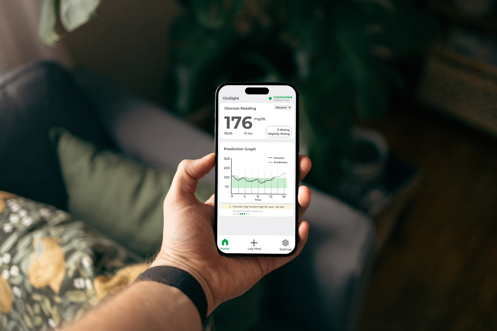
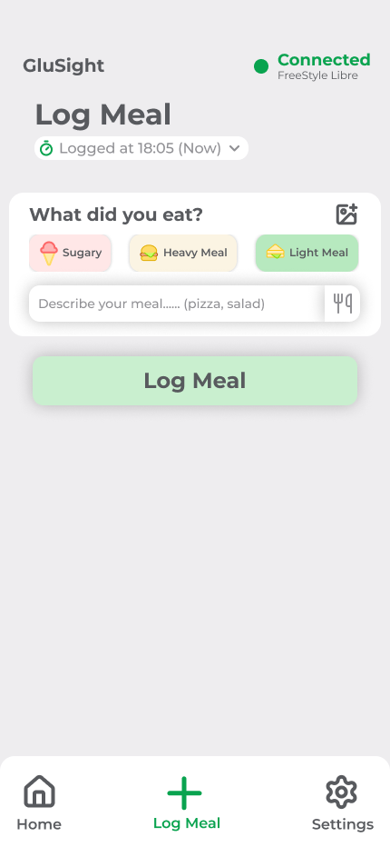
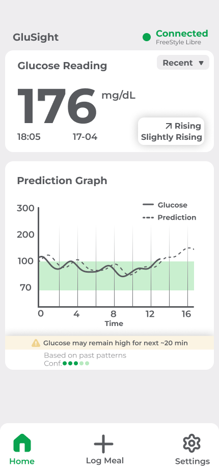
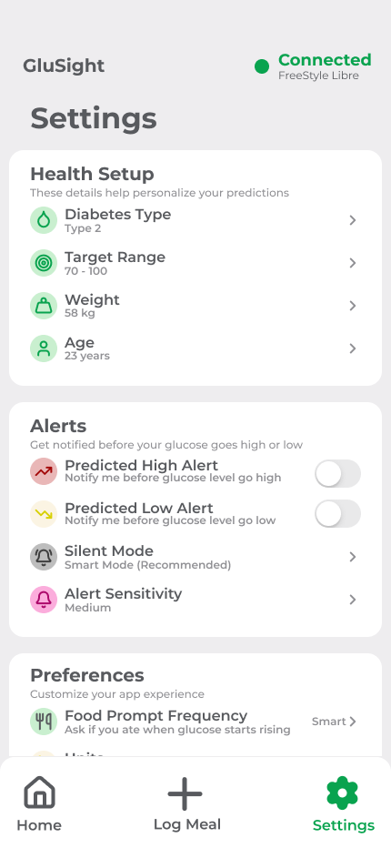
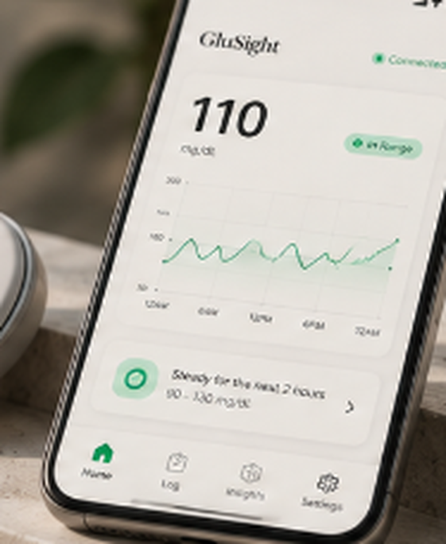

GluSight
A calmer, more informed way to live with diabetes.
GluSight is a concept for a continuous glucose monitoring experience that turns complex data into clear guidance, helping users feel more in control of their health.
More than
a Number
Glucose readings provide valuable information, but a number alone doesn't explain what it means, what caused the change, or what to do next.

Reactive behaviour
Users often respond after changes occur rather than anticipating them.
Cognitive overload
Data without clear context can create confusion and anxiety.
Unpredictability
Glucose changes are uncertain and can feel difficult to manage.
Tracking isn't intervention
Existing systems focus on recording rather than helping users decide what to do next.
From Insight
to Interface
The process focused on understanding user needs, exploring possible solutions through sketches and iterations, and refining a simple, reassuring interface.



Calmm, Clarity &
Contextual Guidance
Transforming continuous biometric telemetry into proactive daily reassurance.

Calm, Actionable Alerts
Notifications are designed around context rather than raw glucose thresholds, helping users understand why a change matters and what they can do next without adding unnecessary anxiety.
Predictive Trajectory Mapping
Instead of isolated numbers, GluSight plots dynamic two-hour forecast curves, replacing sudden alarms with gentle proactive recommendations.
Cause & Effect Correlation
Rapid meal, exercise, and insulin logging directly connects real-world actions with physiological response, eliminating self-blame and guesswork.


.png)
.png)
.jpg)